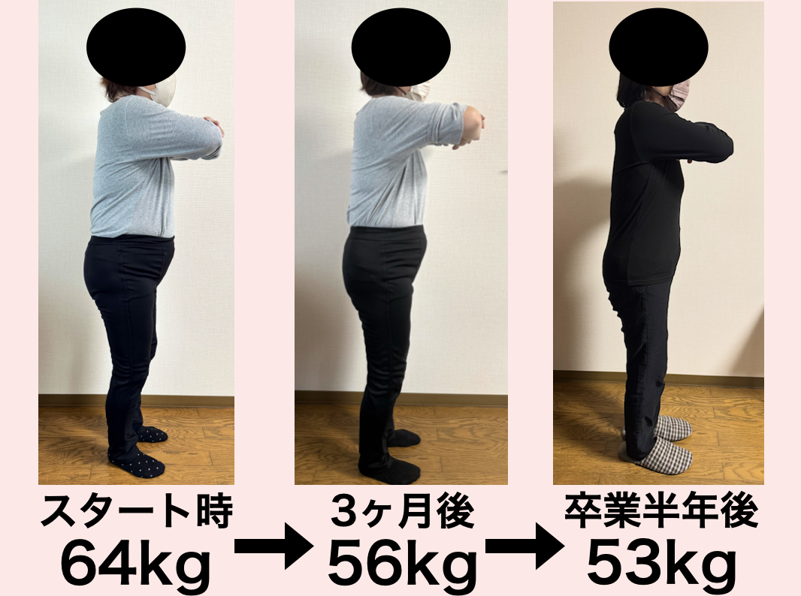

01
女性ホルモンの
急激な減少
40代後半からエストロゲンが急減。エストロゲンには脂肪蓄積を抑える働きがあり、 減少するとお腹・背中・二の腕に脂肪がつきやすくなります。

理学療法士が徹底分析
院長監修
姿勢改善整体
国家資格の
理学療法士の手技
体質を可視化
遺伝子検査
科学的に
ダイエットを設計
完全カスタマイズ
精密な栄養学
あなた専用の
食事設計
健康に痩せてリバウンドから遠のく、
ダイエット整体チームの人気プログラムの
「極意」をぎゅっと詰め込んだ無料LINE講座です。
40歳を過ぎると「あれ？寝ても疲れが取れない」
50歳が見えてきて、いよいよ更年期に突入。
気がつけば、数年で5kg、8kg、10kg増量。
今までだって、何もしなかったわけじゃない。
なんで痩せないの？
私の努力が足りないの？
……と、自分を責めていませんか？
違いますよ。あなたが悪いんじゃない。
あなたが痩せられなかった理由は
たった一つ。
「本当の痩せ方を知らないから」
だから、——
なぜ40代からのダイエットは難しいのか？
40代後半からエストロゲンが急減。エストロゲンには脂肪蓄積を抑える働きがあり、 減少するとお腹・背中・二の腕に脂肪がつきやすくなります。
筋肉量が落ち、1日に消費するカロリーが20代より約200kcal少なくなります。 同じ食事量でも自然に太る計算です。
長年の姿勢の癖で骨盤・背骨が歪み、内臓が本来の位置からズレて圧迫。 消化・吸収・代謝が落ち、食事を整えても痩せにくい状態に。
つまり、痩せられなかったのは
あなたのせいではなく、
40代の体に合った方法を知らなかっただけ。
＼ 私にお任せください ／

3ヶ月平均8kg痩せる科学的に正しい方法で
リバウンドしないダイエットをお伝えします。
運動や食事制限などをしてもなかなか痩せなかった、
または何度もリバウンドを繰り返していませんか？
3ヶ月後にはストレスなく痩せて
その体をずっとキープできる状態にします。
年齢、性別、体形、関係ありません！
私におまかせ下さい。
人生最後のダイエットに致します。

食事制限だけに頼らず、整体院誠天の考え方をLINEで無料受講できます。
LINE登録で無料受講 ＞・・・・・ RESULTS ・・・・・
3ヶ月で-8.5kg

3ヶ月で-8.9kg

3ヶ月で-9.1kg

3ヶ月で-13kg

3ヶ月で-8.6kg
※実際の事例写真です。効果には個人差があります。
お客様の声
50代女性・3ヶ月コース
「今まで様々なダイエットを試しましたが、こんなにストレスなく痩せたのは初めてです。 食事の量を減らさず、むしろしっかり食べるダイエットで3ヶ月で−12.9kg。 先生のサポートがあったから続けられました。」
40代女性・3ヶ月コース
「更年期に入ってから何をやっても痩せず、諦めかけていました。 先生に体の仕組みから教えてもらい、自分に合った食べ方がわかったら、 面白いように−9.1kg。もっと早く出会いたかったです。」
40代女性・3ヶ月コース
「膝の痛みで動くのがつらかったのが、整体と食事の両方で体重が減って膝も軽くなった。 鏡を見るのが楽しみになり、久しぶりに着たかった服が着られました。」
LINE登録後、毎日1通ずつ7日間にわたって配信。1通あたり約5分で読めるボリュームです。
なぜ今までダイエットが続かなかったのか？本当の理由
意志の弱さじゃない。間違った情報・体質に合わない方法・体の歪み、3つの原因を解説
なぜ食事こそが一生続けられるのか？
筋トレや断食と違い、毎日やっていることに少し正しい知識を加えるだけで体が変わる理由
「これを食べれば痩せる」が招く代謝低下のワナ
特定食材ダイエット→筋肉が落ちる→基礎代謝ダウン→リバウンドの仕組みを公開
3食食べると体に起こる"3つの変化"
①代謝が落ちない ②暴食を防げる ③血糖値が安定する ── なぜ食べる方が痩せるのか
体重別"1食のご飯量"とたんぱく質の入れ方
50kg台→100g／60kg台→120g／70kg台→150g／80kg台→150〜200g。毎食たんぱく質で間食欲が消える
脂質を抑える調理法と"食べるタイミング"
揚げる・炒める→茹でる・蒸す・レンジに変える。食事1時間前の空腹で脂肪燃焼を最大化
整体×食事でリバウンドしない体を作る
骨盤・背骨の歪み→内臓圧迫→代謝低下を整体で解消。食事の効果が出やすい体の土台
＋α LINE登録者限定 3大特典
食事制限だけに頼らず、整体院誠天の考え方をLINEで無料受講できます。
LINE登録で無料受講 ＞
ダイエットプログラムを行っている理由は、
整体の施術だけでは限界があったからです。
「根本から症状を改善する」を
コンセプトに東加古川院を開業し、
姿勢や慢性痛を改善してきました。
しかし、お客様からは体重増加やリバウンド、
体重増加で膝や腰の負担、
健康診断の結果を気にする声が多く寄せられました。
外からの施術だけでは
これらの悩みを解決するのが難しいと感じ、
栄養面や生活習慣といった
内側からのアプローチも必要だと考えました。
そこでたくさんの勉強会に行ったり調べたりし、
試行錯誤しながらダイエットプログラムを開発しました。
モニター試験を行ったところ、
3ヶ月で平均8kgの減量に成功しました。
科学的に正しい方法で行うことによって
継続的に健康的な体を手に入れることが
可能なプログラムであると確信し、
もっと広めていきたいと思いました。
このプログラムではストレスなく継続でき、
終了後もリバウンドしにくい体質を作ることができます。
年齢も性別も関係ありません。
過度な運動や食事制限もなしで
一時的な減量ではなく、根本から体を変え、
健康を維持できる体を提供していきたいと思っています。
はい、LINE講座は完全無料です。途中の押し売りや課金もございません。
ありません。配信は1日1〜2通の知識のお届けが中心です。整体院の予約案内は希望時のみお送りします。
はい、LINEの通常のブロックでいつでも解除できます。理由を聞かれることもありません。
もちろんです。LINE講座は全国どこからでも受講可能。文字と動画でお届けします。
大丈夫です。LINE講座は運動を一切必要としない食習慣にフォーカス。ジムに行く時間も体力も不要です。
むしろ40〜50代からのダイエットが本気で必要な世代です。ホルモン変化・代謝低下を考慮した方法をお伝えするので、若い頃と同じやり方より効果的です。
はい。むしろ更年期の症状（イライラ・むくみ・冷え）にも良い影響があります。ホルモンに配慮した食事リズムで、体も心も整っていきます。
大丈夫です。失敗したのはあなたのせいではなく、方法が合っていなかっただけ。40代の体の仕組みに合わせた方法をお届けするので、これまでとは違う結果を実感していただけます。
当院は「食事」「整体」「習慣化」の3方向から根本アプローチ。エステの一時的な脂肪除去ではなく、卒業後もリバウンドしない体質作りが強みです。
食事制限だけに頼らず、整体院誠天の考え方をLINEで無料受講できます。
LINE登録で無料講座を受け取る ＞